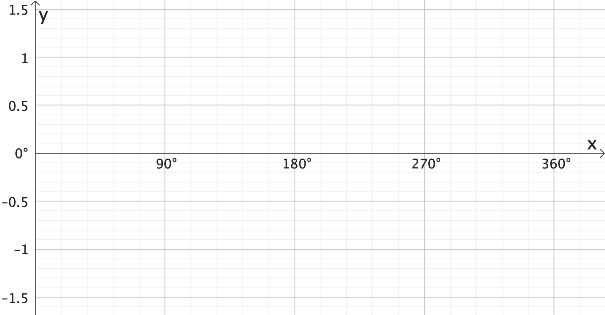
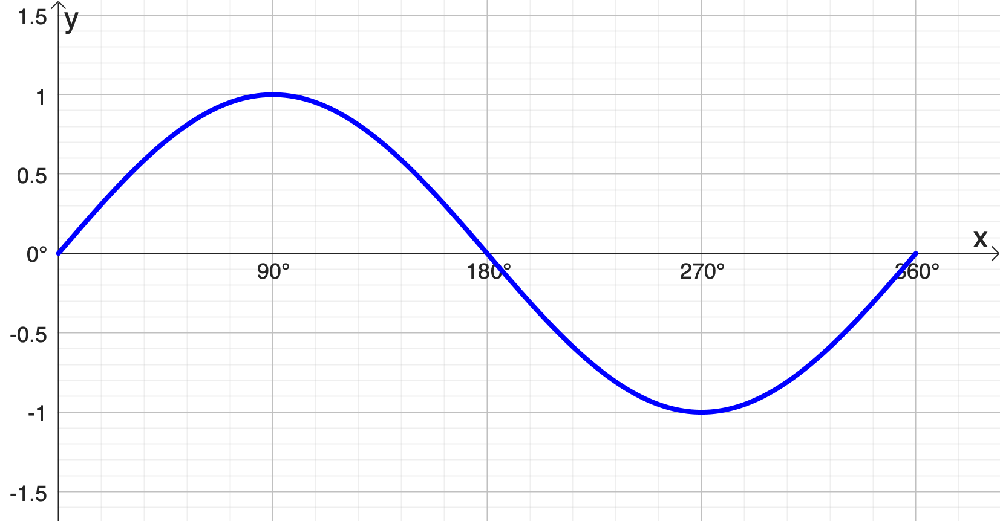
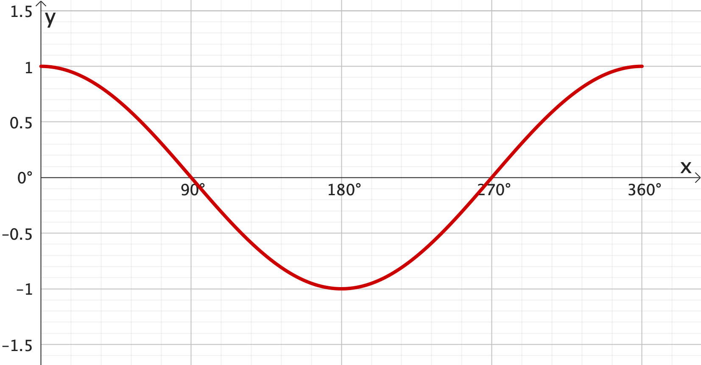
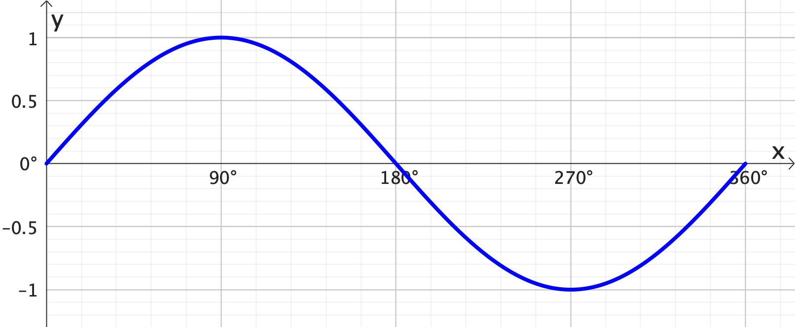
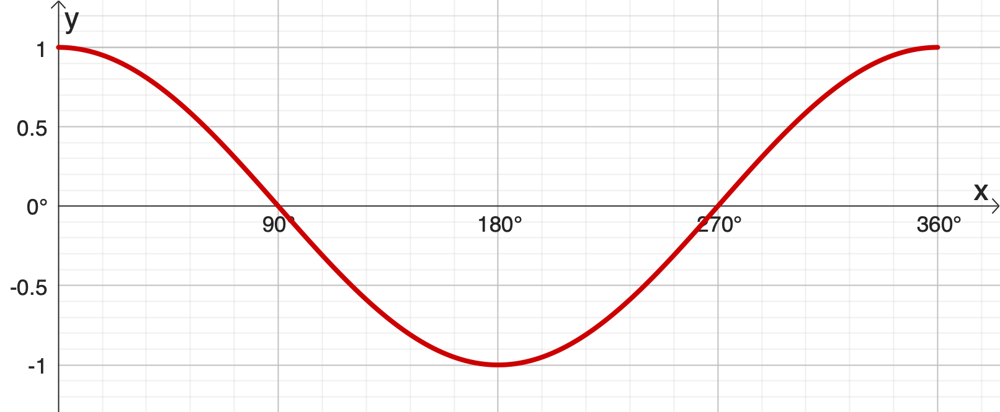
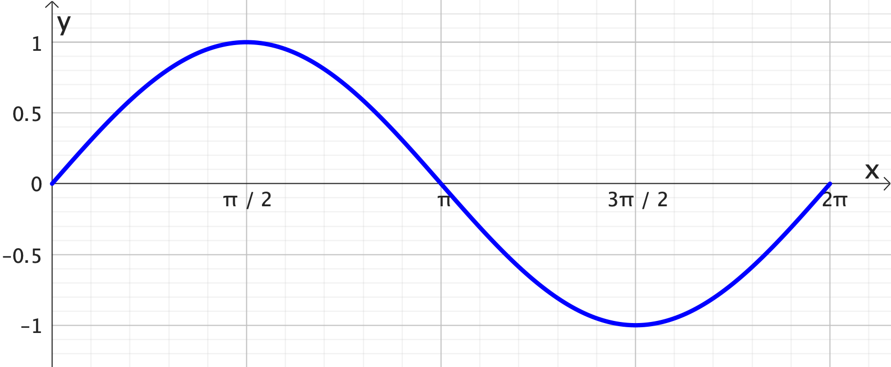
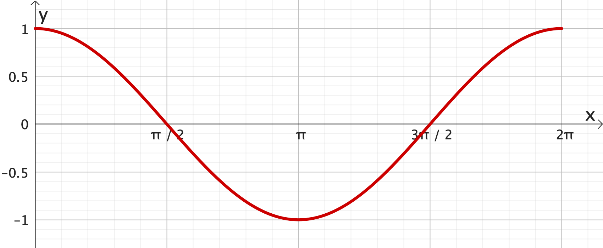
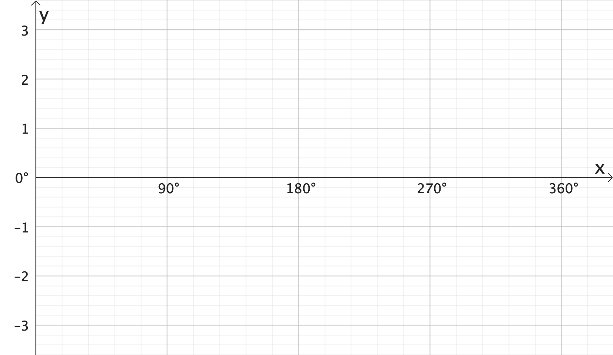
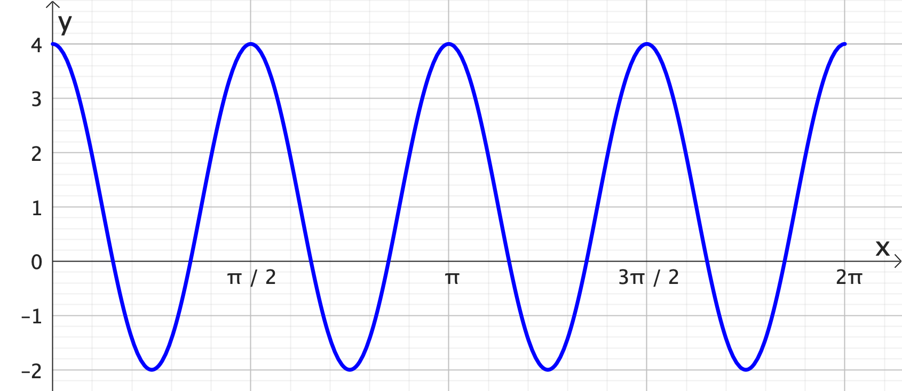
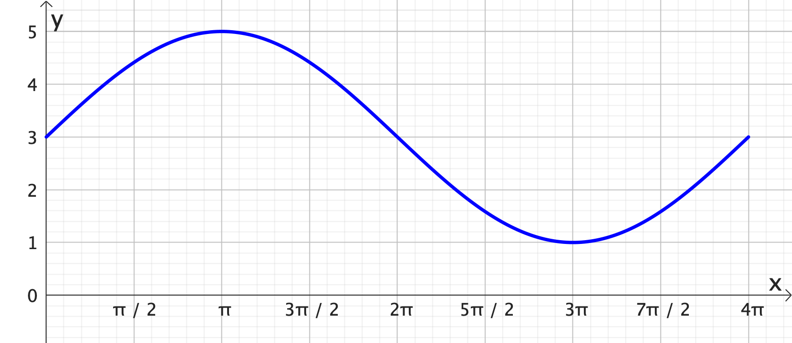

Foundation Mathematics
1017SCG
Week 9
Topics for Week 7
- Graphing trigonometric functions (sin and cos)
- Introduction to limits
- Evaluating limits analytically
- Continuity of functions
Graphing trigonometric functions (sin)

| θ | 30° | 60° | 90° | 120° | 150° | 180° | 210° | 240° | 270° | 300° | 330° | 360° |
|---|---|---|---|---|---|---|---|---|---|---|---|---|
| $\sin \theta$ |
Graphing trigonometric functions (sin)

Graphing trigonometric functions (sin)

Graphing trigonometric functions (cos)
| θ | 30° | 60° | 90° | 120° | 150° | 180° | 210° | 240° | 270° | 300° | 330° | 360° |
|---|---|---|---|---|---|---|---|---|---|---|---|---|
| $\cos \theta$ |
Graphing trigonometric functions (sin)
Graphing trigonometric functions (sin)

Graphing trigonometric functions (sin and cos in degrees)


Graphing trigonometric functions (sin and cos in radians)


Graphing trigonometric functions: Amplitude

Graphing trigonometric functions: Amplitude

Graphing trigonometric functions: Frequency

Graphing trigonometric functions: Frequency

Graphing trigonometric functions: Vertical shift

Graphing trigonometric functions: Vertical shift

Graphing trigonometric functions: Horizontal shift

Graphing trigonometric functions: Horizontal shift

Graphing trigonometric functions: Reflection

Graphing trigonometric functions: Reflection

Graphing trigonometric functions: cos
Graphing trigonometric functions: cos - Amplitude
Graphing trigonometric functions: cos - Frequency
Graphing trigonometric functions: cos - Vertical shift
Graphing trigonometric functions: cos - Horizontal shift
Putting all together
$ y = A \sin \big[B\left(x+C\right)\big] + D \;$ or $\; y = A \cos \big[B\left(x+C\right)\big] + D $
- Amplitude is $A$
- Period is $\dfrac{360^\circ}{B}$ or $\dfrac{2\pi}{B}$ (horizontal compression)
- Horizontal shift is $C$ (phase shift)
- Vertical shift is $D$
Example 1: $\;y = 2 \cos(x) -3$

Example 2: $\;y = 3 \sin(x) +1$
Example 3: Find the main features of the plot

Example 3: Find the main features of the plot
